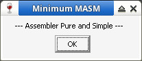

接着測試是否可以正常執行程式
參考資訊：
https://github.com/JWasm/JWasm
https://github.com/JWasm/JWlink
https://www.japheth.de/index.html
$ cd $ git clone https://github.com/JWasm/JWasm $ cd JWasm $ make -f GccUnix.mak $ sudo cp GccUnixR/jwasm /usr/local/bin/ $ jwasm --help JWasm v2.12pre, Dec 24 2025, Masm-compatible assembler. Portions Copyright (c) 1992-2002 Sybase, Inc. All Rights Reserved. Source code is available under the Sybase Open Watcom Public License. $ cd $ git clone https://github.com/JWasm/JWlink $ cd JWlink/orl $ make -f GccUnix.mak $ cd ../dwarf/dw $ make -f GccUnix.mak $ cd ../../sdk/rc/wres $ make -f GccUnix.mak $ cd ../../../ $ make -f GccUnix.mak $ sudo cp GccUnixR/jwlink /usr/local/bin $ jwlink --help JWlink Version 1.9beta 13 Portions Copyright (c) 1985-2002 Sybase, Inc. All Rights Reserved. Source code is available under the Sybase Open Watcom Public License. $ cd $ git clone https://github.com/steward-fu/wadk $ sudo mv wadk /opt $ sudo apt-get install dosbox $ cd $ wget https://github.com/steward-fu/website/releases/download/pro1/Box86-64_Wine86-64.sh $ chmod a+x ./Box86-64_Wine86-64.sh $ ./Box86-64_Wine86-64.sh $ WINEPREFIX=~/.wine_x86 box86 wine winecfg
如果字型太小，建議DPI設定成144
接着測試是否可以正常執行程式
$ WINEPREFIX=~/.wine_x86 box86 wine /opt/wadk/masm32/examples/exampl01/minimum/minimum.exe
